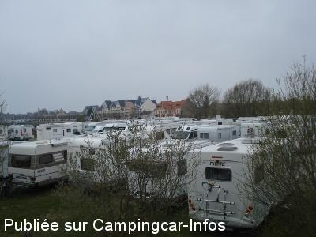
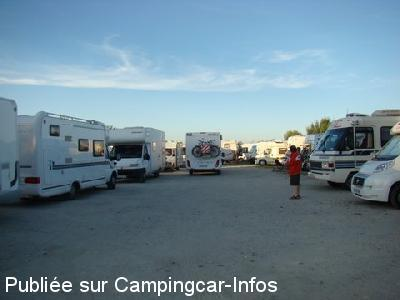
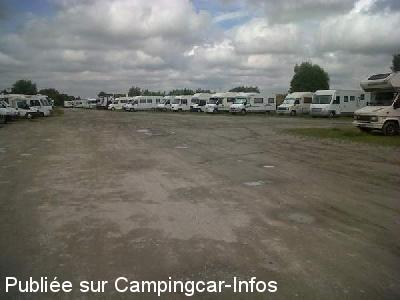
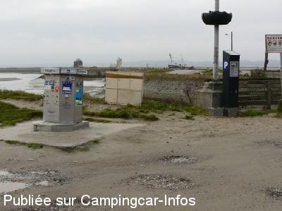
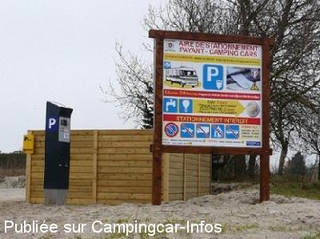

ASN = Aire de services avec stationnement nuit possible de :
LE CROTOY
(N° 565)
Accès/adresse :
Digue Mercier
80550 LE CROTOY
80550 LE CROTOY
Latitude : (Nord) 50.21819° Décimaux ou 50° 13′ 5′′
Longitude : (Est) 1.6334° Décimaux ou 1° 38′ 0′′
Tarif : 2016
Stationnement : 6 €
Eau et 50 m d'électricité : 2 €
Paiement par monnayeur
Type de borne : AIRESERVICES
Services :


Autres informations :
Borne de services équipée antigel
Près de l'écluse
Au bout de la jetée du port de plaisance

Le 22/09/2013 par pirate28

Le 19/09/2012 par carotel h622 belgie

Le 23/07/2012 par claire

Le 18/03/2012 par 10 mars 2012 Guy 41

Le 18/03/2012 par 10 mars 2012 Guy 41
de
Le Dide
le 15/03/2016 :
§ Terrain très peu praticable, bosses et fosses partout ,6 euros pour deux heures ou pour 24 heures, c"est le même tarif je rejoins certains commentaires pour ne pas conseiller cette aire
§ Terrain très peu praticable, bosses et fosses partout ,6 euros pour deux heures ou pour 24 heures, c"est le même tarif je rejoins certains commentaires pour ne pas conseiller cette aire
de
patrice
le 21/02/2016 :
De passage le 12/02/2016 nous avons fait demi tour devant ce terrain vague certes il avait plu mais cette aire ressemble a un champ de boue. il vaut mieux aller dans le département voisin au Tréport ou a Dieppe là ils aiment les camping-caristes pas comme au Crotoy.
Je pense qu'au vu du taux d'occupation et du rapport que doit générer cette aire, la commune pourrait faire un effort par exemple goudronner .
De passage le 12/02/2016 nous avons fait demi tour devant ce terrain vague certes il avait plu mais cette aire ressemble a un champ de boue. il vaut mieux aller dans le département voisin au Tréport ou a Dieppe là ils aiment les camping-caristes pas comme au Crotoy.
Je pense qu'au vu du taux d'occupation et du rapport que doit générer cette aire, la commune pourrait faire un effort par exemple goudronner .
de
Bernard Housiaux
le 23/08/2015 :
Vraiment à éviter en Saison. Quelques centimètres entre chaque CC, plein de Bruit, plein de Crasses partout et de nombreux propriétaires de chiens ne prennent même pas la peine de ramasser leurs Crottes. Triste et honteux…
Vraiment à éviter en Saison. Quelques centimètres entre chaque CC, plein de Bruit, plein de Crasses partout et de nombreux propriétaires de chiens ne prennent même pas la peine de ramasser leurs Crottes. Triste et honteux…
de
michele
le 20/07/2015 :
terrain horrible plein de trous et je vous dis pas avec la pluie le bain de pieds est assuré et quand même 6 euros
surtout ne payez pas par carte car elle fonctionne très mal et vous vous retrouvez avec 3 ou 4 jours encaissés alors que vous vouliez qu'un jour
IMPERATIF PAYEZ AVEC DE LA MONNAIE ET PAS DE MAUVAISE SURPRISES
borne minable et comme souvent en panne
terrain horrible plein de trous et je vous dis pas avec la pluie le bain de pieds est assuré et quand même 6 euros
surtout ne payez pas par carte car elle fonctionne très mal et vous vous retrouvez avec 3 ou 4 jours encaissés alors que vous vouliez qu'un jour
IMPERATIF PAYEZ AVEC DE LA MONNAIE ET PAS DE MAUVAISE SURPRISES
borne minable et comme souvent en panne
de
bogé56
le 12/07/2015 :
Je confirme, seul intérêt de ce...terrain vague, c'est la proximité avec les commerces. Aprés la pluie, boue, flaques d'eau et de nombreux endroits impraticables par crainte d'enlisement. Fosse de vidange eaux grises bouchée ( dénonçons le comportement de certains qui vidangent quand même alors que ca déborde ).
De plus, il vaut mieux régler les 6 € demandés en monnaie car il y a un gros soucis à régler par carte bancaire ( voir le CC mag de Juillet page 25 )
Je confirme, seul intérêt de ce...terrain vague, c'est la proximité avec les commerces. Aprés la pluie, boue, flaques d'eau et de nombreux endroits impraticables par crainte d'enlisement. Fosse de vidange eaux grises bouchée ( dénonçons le comportement de certains qui vidangent quand même alors que ca déborde ).
De plus, il vaut mieux régler les 6 € demandés en monnaie car il y a un gros soucis à régler par carte bancaire ( voir le CC mag de Juillet page 25 )
de
Mathonet
le 18/06/2015 :
Le seul avantage, sa situation et le boulanger.
A part cela, terrain non éclairé, des bosses et des fosses, une seule aire de service, un vrai terrain vague...
Vu ce que rapporte l'énorme fréquentation, il serait légitime de demander une rénovation.
Le seul avantage, sa situation et le boulanger.
A part cela, terrain non éclairé, des bosses et des fosses, une seule aire de service, un vrai terrain vague...
Vu ce que rapporte l'énorme fréquentation, il serait légitime de demander une rénovation.
de
Dandunord
le 05/06/2015 :
Nous y avons passé la nuit du 9 au 10 mai 2015 qui fut calme malgré le grand nombre de camping-cars.
Très grande aire située près du port et de la ville.
Les emplacements ne sont pas délimités et le sol mériterait d'être nivelé.
Une seule dalle de vidange, c'est un peu juste pour tant de camping-cars.
Nous y avons passé la nuit du 9 au 10 mai 2015 qui fut calme malgré le grand nombre de camping-cars.
Très grande aire située près du port et de la ville.
Les emplacements ne sont pas délimités et le sol mériterait d'être nivelé.
Une seule dalle de vidange, c'est un peu juste pour tant de camping-cars.
de
Ralph
le 12/11/2014 :
§Oui, il est juste un parking poussiéreux, mais il est tout près de la ville et de 6 euros pour un parking de 24 heures. Cela vaut la peine de visiter
Yes it's just a dusty car park, but it's right near to the town and 6 euros for 24 hours parking. This is worth visiting
§Oui, il est juste un parking poussiéreux, mais il est tout près de la ville et de 6 euros pour un parking de 24 heures. Cela vaut la peine de visiter
Yes it's just a dusty car park, but it's right near to the town and 6 euros for 24 hours parking. This is worth visiting
de
b dominique
le 02/11/2014 :
dommage qu'il n'y ai pas plus de suivi sur le peu d'infrastructure pour autant de CC.Trop de trous,pas de lumière le soir(quelques spots ne seraient pas du luxe)Les CC font bien vivre les commerces et la ville!!! alors un ptit effort serait le bienvenu. Certes une nouvelle dalle à été coulée à la borne.C'est un bon début mais insuffisant
B Domi
dommage qu'il n'y ai pas plus de suivi sur le peu d'infrastructure pour autant de CC.Trop de trous,pas de lumière le soir(quelques spots ne seraient pas du luxe)Les CC font bien vivre les commerces et la ville!!! alors un ptit effort serait le bienvenu. Certes une nouvelle dalle à été coulée à la borne.C'est un bon début mais insuffisant
B Domi
de
Marloye
le 01/11/2014 :
Ah, le Crotoy… Aire fréquentable uniquement hors saison.
Nous y sommes passés la nuit du 30 octobre, et ce uniquement pour des coquilles ST-Jacques. Cette nuitée n'a fait que renforcer notre idée première.
Camping caristes: si vraiment vous cherchez le calme, les endroits particuliers, les endroits calmes ou autres, fuyez le Crotoy. Cherchez d'autres endroits plus vers l'intérieur des terres, oubliez ce lieu, tout du moins en saison, parce que si vous avez l'opportunité d'y aller entre novembre et mars, alors ce lieu se révèle très attrayant.
A vous de voir…
Ah, le Crotoy… Aire fréquentable uniquement hors saison.
Nous y sommes passés la nuit du 30 octobre, et ce uniquement pour des coquilles ST-Jacques. Cette nuitée n'a fait que renforcer notre idée première.
Camping caristes: si vraiment vous cherchez le calme, les endroits particuliers, les endroits calmes ou autres, fuyez le Crotoy. Cherchez d'autres endroits plus vers l'intérieur des terres, oubliez ce lieu, tout du moins en saison, parce que si vous avez l'opportunité d'y aller entre novembre et mars, alors ce lieu se révèle très attrayant.
A vous de voir…
de
Duncan Pickering
le 13/10/2014 :
4/10/14
Le Crotoy council must rub their hands laughing when they see 120cc fight to get space on a dirty patch of land and pay 5 euros per night - only 1 borne.
cc pay too much for very little - 2 euros should be more than enough as cc will always bring revenue to the town.
the town has banned cc overnighting in surrounding roads.
4/10/14
Le Crotoy council must rub their hands laughing when they see 120cc fight to get space on a dirty patch of land and pay 5 euros per night - only 1 borne.
cc pay too much for very little - 2 euros should be more than enough as cc will always bring revenue to the town.
the town has banned cc overnighting in surrounding roads.
de
jiji02
le 21/09/2014 :
Proche village, poussiéreux par temps sec, flaques d'eaux et boue par temps humide. Peu d'herbe, ça vaut pas plus de 5€
Proche village, poussiéreux par temps sec, flaques d'eaux et boue par temps humide. Peu d'herbe, ça vaut pas plus de 5€
de
TARISIEN
le 01/09/2014 :
Très belle aire près des commerces et des poissonniers
Très belle aire près des commerces et des poissonniers
de
Pinecar
le 24/06/2014 :
§ Aire bien située mais mal organisée quant au stationnement n'en parlons pas, c'est l'anarchie. Par temps sec une énorme poussière au moindre déplacement des C.C. 5 Euros c'est bien payé !
§ Aire bien située mais mal organisée quant au stationnement n'en parlons pas, c'est l'anarchie. Par temps sec une énorme poussière au moindre déplacement des C.C. 5 Euros c'est bien payé !
de
marose
le 15/05/2014 :
Belle et grande aire de services au bout du village.
Prix raisonnable, sol herbeux et caillouteux mais plat.
À recommander
Belle et grande aire de services au bout du village.
Prix raisonnable, sol herbeux et caillouteux mais plat.
À recommander